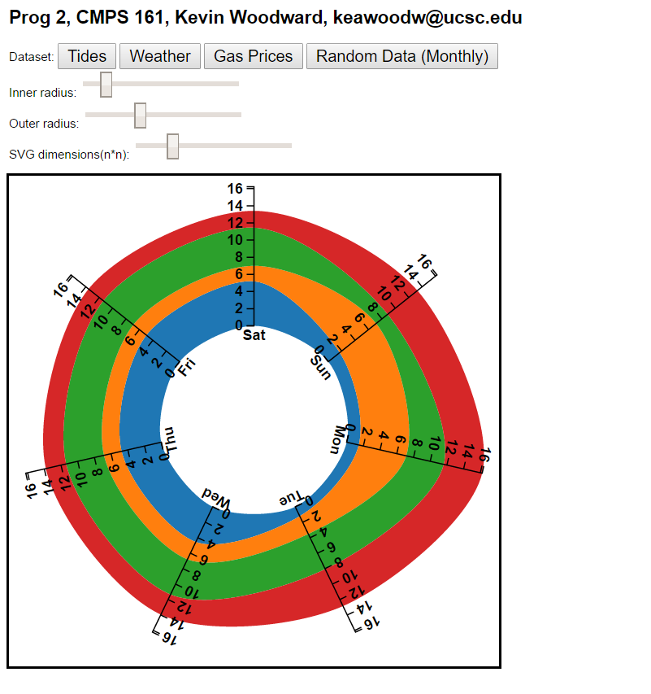
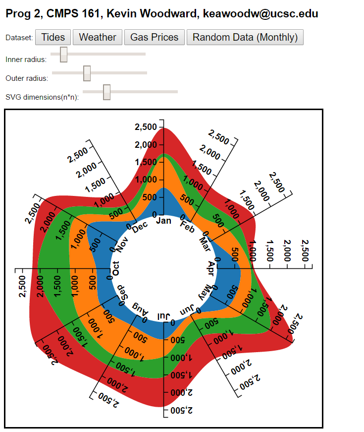

Program 2
CMPS 161, Alex Pang
March 15, 2017
Kevin Woodward
keawoodw@ucsc.edu
This project deals with creating circular streamgraphs using d3js with outside dataSample datasets are from various sources. More in depth information is available in the technical writeup.
Link to the program page (local)
Link to the program page (hosted)
Note: Local version will not work with the external data files in the directory due to Cross Origin Reference errors (web security), so for the sake of usability there is a link to the UCSC hosting of the project.
Link to the docs page
Sample image 1:

Sample image 2:
